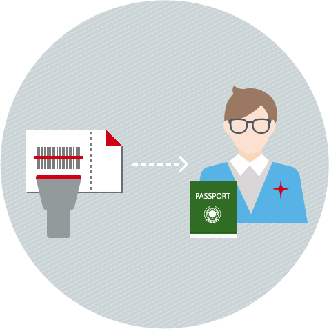

모바일 및 인터넷 예매, 인터넷 좌석 배정 완료 후 홈탑승권과 모바일 탑승권으로 받으실 수 있습니다.

2단계 보안GATE
- 종이·모바일 탑승권 바코드를 보안 GATE 스캐너에 인식해 주세요.
- 신분증을 보안 GATE 직원에게 제시해주세요.
3단계 항공기 탑승
이스타항공과 함께 멋진 비행 되세요,
모바일 탑승서비스 대상
- 국내선 이용고객
- 1인 1예매 시 이용가능
- 모바일앱을 통해 탑승권을 확인할 수 있는 대상
- 2인 이상의 승객이나, 증빙서류가 필요한 할인대상 승객은 이용불가
- 위탁수하물 소지 승객은 탑승수속카운터 이용
유의사항
- 항공기 출발 20분 전까지 보안 GATE를 통과하지 못할 경우 탑승이 거절될 수 있습니다.
- 7Kg 이상의 무게, 3면의 합이 115cm 이상의 수하물이 있으신 경우, 탑승수속 카운터를 이용하여 위탁하여 주시기 바랍니다.
- 공항출발장 앞 자동출발게이트에 바코드를 읽혀주신후, 자동 출력되는 탑승정보 안내용지를 수령하여 주십시오. 탑승구 정보는 출발 당일 탑승정보 안내용지에서 확인이 가능합니다.
- 항공기 출발 5분 전 탑승이 마감되며, 승무원의 탑승권 확인요청 시 탑승정보 안내용지를 보여주시기 바랍니다. (탑승마감 후에는 탑승이 거절되며 위탁수하물은 하기됩니다)
- 항공기 교체, 기상악화 등 예기치 못한 사유로 사전 고지 없이 배정된 좌석이 변경 또는 취소되는 경우에는 모바일 탑승권의 사용이 제한될 수 있습니다.
- 모바일 탑승서비스는 스마트폰(Android/Apple) 소지 고객에 한해 제공됩니다.